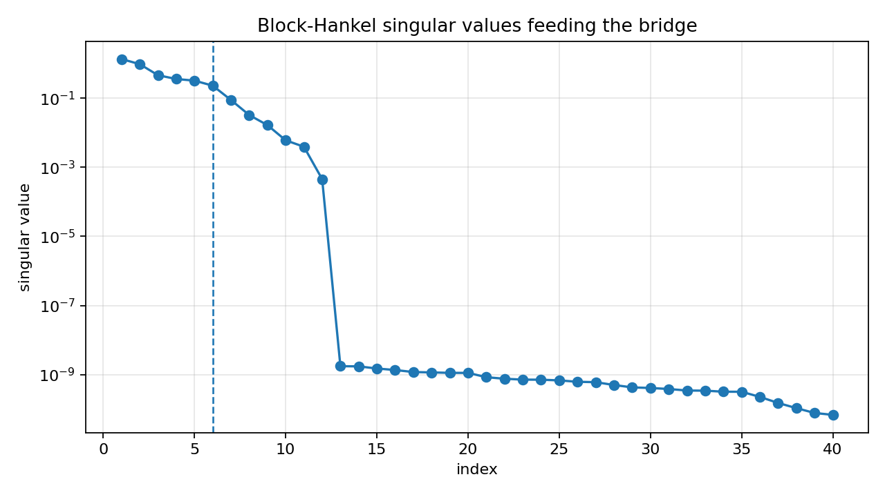
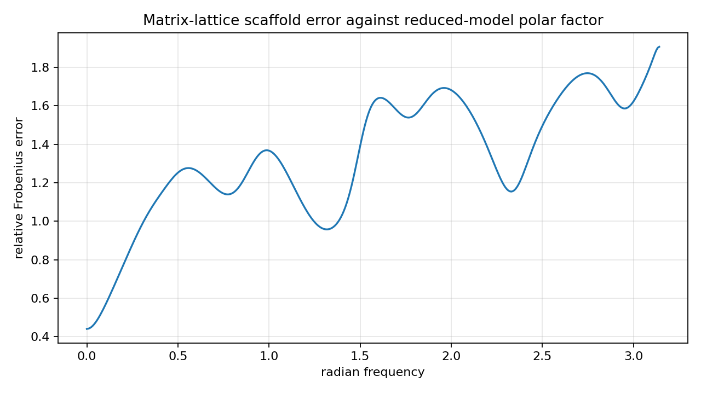
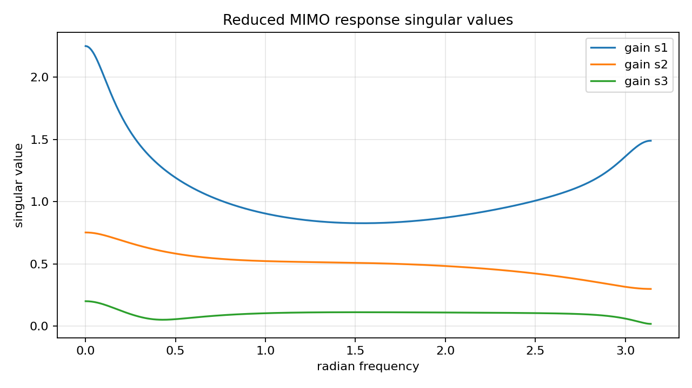

MIMO block-Hankel to matrix-lattice bridge diagnostics¶
Tutorial goal
Use reduced MIMO Markov data to seed a stable matrix-lattice all-pass scaffold and measure the realization gap.
Note
New to the terminology? See the lattice DSP concept map and the causality/data-use guide for how online, offline, block, and MIMO examples should be read.
Context¶
This page defines the bridge scope between the MIMO block-Hankel reducer and the matrix-lattice direction. A general reduced MIMO state-space model has frequency-dependent gains, while a matrix-lattice all-pass is unitary. The example therefore compares a stable lattice scaffold with the reduced model’s unitary polar factor as a diagnostic, not an exact realization solver.
Key idea and equations¶
For a reduced response H(e^{j\omega}), the polar factor is the unitary matrix
where H=U\Sigma V^H. The scaffold error reports how close a finite matrix-lattice
all-pass response is to this unitary part.
How to read the result¶
Look for a stable reduced state model, a unitary scaffold, and the polar-factor error. This is a diagnostic/initialization bridge, not a matrix AAK/Nehari solver.
Run command¶
python examples/mimo_hankel_to_matrix_lattice_bridge.py
Run status¶
Return code: 0
Captured stdout¶
full state order: 12
reduced state order: 6
channels: 3
reduced state radius: 0.8562
retained block-Hankel energy: 0.997184
relative Markov error: 3.630e-03
matrix-lattice scaffold order: 6
max scaffold reflection singular value: 0.5005
scaffold unitarity error: 1.096e-14
polar-factor relative error: 1.373e+00
reduced response gain condition span: 1.247e+02
bridge status: scaffold diagnostic, not an exact matrix-lattice realization
Figures¶
{kind=link}

mimo_bridge_block_hankel_singular_values.png¶
{kind=link}

mimo_bridge_polar_error.png¶
{kind=link}

mimo_bridge_reduced_response_gains.png¶
Generated data files¶
Source code¶
1"""Tutorial: bridge diagnostics from MIMO block-Hankel reduction to matrix lattices.
2
3This is deliberately a bridge diagnostic, not a matrix AAK/Nehari or exact
4matrix-lattice realization solver. A general stable MIMO state-space model has
5frequency-dependent gains, while :class:`lattice_dsp.MatrixLatticeAllPass`
6represents unitary/all-pass scattering. The useful question at this stage is:
7can the reduced MIMO model provide stable matrix-lattice *initialization data*
8and how far is that all-pass scaffold from the reduced model's unitary/polar
9part?
10"""
11
12from __future__ import annotations
13
14import csv
15import os
16from pathlib import Path
17
18import numpy as np
19
20import lattice_dsp as ld
21try:
22 from examples.mimo_coupled_model_reduction import coupled_state_space, state_spectral_radius
23except Exception: # pragma: no cover - direct script execution uses examples/ on sys.path.
24 from mimo_coupled_model_reduction import coupled_state_space, state_spectral_radius
25
26
27def artifact_dir() -> Path:
28 path = Path(os.environ.get("LATTICE_DSP_ARTIFACT_DIR", "reports/example-artifacts"))
29 path.mkdir(parents=True, exist_ok=True)
30 return path
31
32
33def state_space_frequency_response(A, B, C, D, omega: np.ndarray) -> np.ndarray:
34 """Evaluate ``D + C z^-1 (I - A z^-1)^-1 B`` on the unit circle."""
35
36 A = np.asarray(A, dtype=float)
37 B = np.asarray(B, dtype=float)
38 C = np.asarray(C, dtype=float)
39 D = np.asarray(D, dtype=float)
40 omega = np.asarray(omega, dtype=float).reshape(-1)
41 n_outputs, n_inputs = D.shape
42 n_state = A.shape[0]
43 response = np.empty((omega.size, n_outputs, n_inputs), dtype=np.complex128)
44 eye = np.eye(n_state, dtype=np.complex128)
45 for i, w in enumerate(omega):
46 zinv = np.exp(-1j * float(w))
47 if n_state:
48 response[i] = D + C @ (zinv * np.linalg.solve(eye - zinv * A, B))
49 else:
50 response[i] = D
51 return response
52
53
54def polar_factor_per_frequency(response: np.ndarray) -> np.ndarray:
55 """Return the unitary polar factor of each square frequency-response matrix."""
56
57 response = np.asarray(response, dtype=np.complex128)
58 if response.ndim != 3 or response.shape[1] != response.shape[2]:
59 raise ValueError("response must have shape (frequency, channels, channels)")
60 out = np.empty_like(response)
61 for i, h in enumerate(response):
62 u, _, vh = np.linalg.svd(h, full_matrices=False)
63 out[i] = u @ vh
64 return out
65
66
67def matrix_lattice_scaffold_from_markov(markov: np.ndarray, *, order: int, gain: float = 0.55) -> ld.MatrixLatticeAllPass:
68 """Build a stable matrix-lattice scaffold from early reduced Markov matrices.
69
70 The result is an all-pass/unitary scaffold. It is not an exact realization
71 of the reduced MIMO model; the Markov matrices only provide coupling
72 directions for contractive reflection initializers.
73 """
74
75 markov = np.asarray(markov, dtype=float)
76 if markov.ndim != 3 or markov.shape[1] != markov.shape[2]:
77 raise ValueError("markov must have shape (samples, channels, channels)")
78 channels = markov.shape[1]
79 reflections = []
80 for k in range(order):
81 idx = min(k + 1, markov.shape[0] - 1)
82 raw = markov[idx]
83 norm = np.linalg.norm(raw, ord=2)
84 scaled = np.zeros((channels, channels), dtype=np.complex128) if norm == 0.0 else gain * raw / norm
85 reflections.append(ld.contractive_matrix_from_raw(scaled, margin=1e-5))
86 residue = ld.unitary_polar_factor(markov[0] + 1e-6 * np.eye(channels))
87 return ld.MatrixLatticeAllPass(reflections, residue=residue, margin=1e-9)
88
89
90def response_relative_error(reference: np.ndarray, estimate: np.ndarray) -> float:
91 return float(np.linalg.norm(reference - estimate) / max(np.linalg.norm(reference), 1e-30))
92
93
94def main() -> None:
95 out_dir = artifact_dir()
96
97 full_order = 12
98 reduced_order = 6
99 channels = 3
100 n_markov = 220
101 block_rows = block_cols = 28
102 lattice_order = 6
103 omega = np.linspace(0.0, np.pi, 384)
104
105 A, B, C, D = coupled_state_space(order=full_order, outputs=channels, inputs=channels, seed=31)
106 markov = ld.mimo_state_space_markov_response(A, B, C, D, n_markov)
107 reduced = ld.finite_hankel_reduce_mimo(markov, reduced_order=reduced_order, block_rows=block_rows, block_cols=block_cols)
108 reduced_markov = ld.mimo_state_space_markov_response(reduced["A"], reduced["B"], reduced["C"], reduced["D"], n_markov)
109
110 lattice = matrix_lattice_scaffold_from_markov(reduced_markov, order=lattice_order)
111 h_reduced = state_space_frequency_response(reduced["A"], reduced["B"], reduced["C"], reduced["D"], omega)
112 polar_target = polar_factor_per_frequency(h_reduced)
113 h_lattice = lattice.frequency_response(omega, n_threads=1)
114
115 gain_singular = np.linalg.svd(h_reduced, compute_uv=False)
116 polar_error = response_relative_error(polar_target, h_lattice)
117 gain_flatness = float(np.max(gain_singular) / max(np.min(gain_singular), 1e-30))
118 markov_error = float(np.sum((markov - reduced_markov) ** 2) / (np.sum(markov**2) + 1e-30))
119 lattice_unitarity = lattice.unitarity_error(omega)
120
121 summary = {
122 "full_order": full_order,
123 "reduced_order": reduced_order,
124 "channels": channels,
125 "lattice_order": lattice_order,
126 "reduced_state_radius": state_spectral_radius(reduced["A"]),
127 "retained_hankel_energy": float(reduced["retained_hankel_energy"]),
128 "relative_markov_error": markov_error,
129 "lattice_max_reflection_singular_value": lattice.max_reflection_singular_value(),
130 "lattice_unitarity_error": lattice_unitarity,
131 "polar_factor_relative_error": polar_error,
132 "reduced_response_gain_condition_span": gain_flatness,
133 "note": "matrix-lattice scaffold, not exact realization",
134 }
135
136 csv_path = out_dir / "mimo_hankel_to_matrix_lattice_bridge_summary.csv"
137 with csv_path.open("w", newline="", encoding="utf-8") as f:
138 writer = csv.DictWriter(f, fieldnames=list(summary))
139 writer.writeheader()
140 writer.writerow(summary)
141
142 print("full state order:", full_order)
143 print("reduced state order:", reduced_order)
144 print("channels:", channels)
145 print("reduced state radius:", f"{summary['reduced_state_radius']:.4f}")
146 print("retained block-Hankel energy:", f"{summary['retained_hankel_energy']:.6f}")
147 print("relative Markov error:", f"{markov_error:.3e}")
148 print("matrix-lattice scaffold order:", lattice_order)
149 print("max scaffold reflection singular value:", f"{summary['lattice_max_reflection_singular_value']:.4f}")
150 print("scaffold unitarity error:", f"{lattice_unitarity:.3e}")
151 print("polar-factor relative error:", f"{polar_error:.3e}")
152 print("reduced response gain condition span:", f"{gain_flatness:.3e}")
153 print("bridge status: scaffold diagnostic, not an exact matrix-lattice realization")
154 print(f"wrote {csv_path}")
155
156 try:
157 import matplotlib.pyplot as plt
158 except Exception:
159 print("matplotlib is not installed; skipped figures")
160 return
161
162 fig, ax = plt.subplots(figsize=(8.0, 4.5))
163 for i in range(channels):
164 ax.plot(omega, gain_singular[:, i], label=f"gain s{i + 1}")
165 ax.set_title("Reduced MIMO response singular values")
166 ax.set_xlabel("radian frequency")
167 ax.set_ylabel("singular value")
168 ax.grid(True, alpha=0.3)
169 ax.legend()
170 fig.tight_layout()
171 fig_path = out_dir / "mimo_bridge_reduced_response_gains.png"
172 fig.savefig(fig_path, dpi=160)
173 print(f"wrote {fig_path}")
174
175 per_freq_error = np.linalg.norm(polar_target - h_lattice, axis=(1, 2)) / np.maximum(
176 np.linalg.norm(polar_target, axis=(1, 2)), 1e-30
177 )
178 fig2, ax2 = plt.subplots(figsize=(8.0, 4.5))
179 ax2.plot(omega, per_freq_error)
180 ax2.set_title("Matrix-lattice scaffold error against reduced-model polar factor")
181 ax2.set_xlabel("radian frequency")
182 ax2.set_ylabel("relative Frobenius error")
183 ax2.grid(True, alpha=0.3)
184 fig2.tight_layout()
185 fig2_path = out_dir / "mimo_bridge_polar_error.png"
186 fig2.savefig(fig2_path, dpi=160)
187 print(f"wrote {fig2_path}")
188
189 fig3, ax3 = plt.subplots(figsize=(8.0, 4.5))
190 hsv = np.asarray(reduced["hankel_singular_values"], dtype=float)
191 idx = np.arange(1, min(40, hsv.size) + 1)
192 ax3.semilogy(idx, hsv[: idx.size], marker="o")
193 ax3.axvline(reduced_order, linestyle="--", linewidth=1.2)
194 ax3.set_title("Block-Hankel singular values feeding the bridge")
195 ax3.set_xlabel("index")
196 ax3.set_ylabel("singular value")
197 ax3.grid(True, alpha=0.3)
198 fig3.tight_layout()
199 fig3_path = out_dir / "mimo_bridge_block_hankel_singular_values.png"
200 fig3.savefig(fig3_path, dpi=160)
201 print(f"wrote {fig3_path}")
202
203
204if __name__ == "__main__":
205 main()